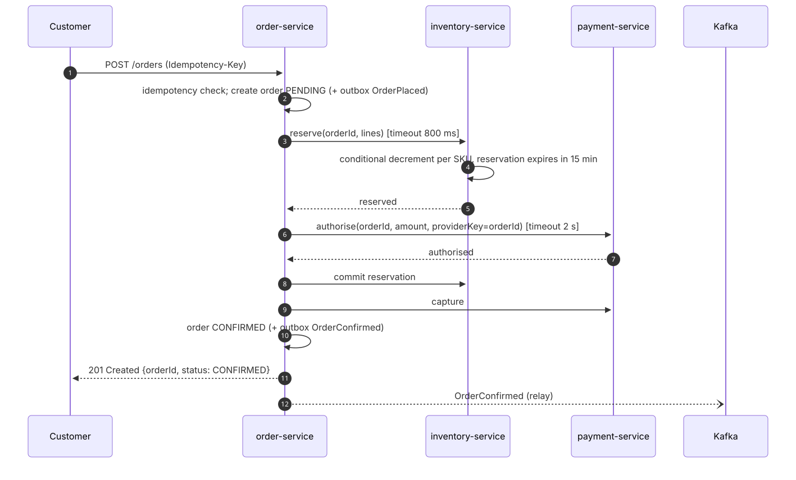

E-commerce platform: system design specification#
| Status | Draft 1 |
| Scope | Online store: catalogue, search, cart, checkout, inventory, payments, notifications |
| Stack | Java 25 (main), Go, Python; PostgreSQL, Cassandra, Redis, OpenSearch, ClickHouse, MinIO; Kafka, RabbitMQ; Keycloak; Kubernetes |
Contents#
- Problem statement
- Requirements
- Capacity estimates
- Architecture
- Services
- Key flows
- Data design
- Cross-cutting concerns
- Technology choices
- Deployment
- Failure modes
- Extensions
- Scalability, modularity and performance
- Polyglot persistence
- Design patterns applied
- Languages
1. Problem statement#
Build the backend of an online store that lets customers:
- browse and search a large catalogue;
- keep a cart;
- check out and pay;
- follow their orders.
The system must:
- stay responsive at peak traffic, such as a sales event;
- never sell stock it does not have;
- never charge a customer twice for one order;
- keep working in a degraded mode when a dependency fails.
2. Requirements#
2.1 Functional#
| ID | Requirement |
|---|---|
| F1 | Customers can browse categories and view product details (price, images, attributes, availability). |
| F2 | Customers can run full-text search with filters (category, price range, brand, attributes), sorting and pagination. |
| F3 | Guests and signed-in customers keep a cart. A guest cart merges into the account cart on sign-in. |
| F4 | Checkout turns a cart into an order. It reserves stock, takes payment and confirms the order, or fails cleanly with nothing charged and nothing held. |
| F5 | Customers see their order history and status (PENDING, CONFIRMED, CANCELLED, SHIPPED, DELIVERED). |
| F6 | Customers can cancel an order before it ships. Stock is released and the payment is refunded. |
| F7 | Staff manage products, categories, prices and stock levels. |
| F8 | Customers receive email for order confirmation, cancellation and shipping. |
| F9 | Registration and sign-in use OpenID Connect, with roles customer and staff. |
| F10 | Customers can rate and review products they bought; product pages show the rating summary and the newest reviews. |
| F11 | Staff upload product images directly to object storage; the platform never proxies the image bytes. |
| F12 | Product pages show "customers who bought this also bought" recommendations. |
| F13 | Staff see sales dashboards (orders, revenue, top products, cancellation reasons) that are at most a minute behind. |
2.2 Non-functional#
| ID | Quality | Target |
|---|---|---|
| N1 | Availability | 99.95% monthly for browse, search and cart; 99.9% for checkout |
| N2 | Latency (p99, server side) | Product page ≤ 150 ms, search ≤ 300 ms, add to cart ≤ 100 ms, place order ≤ 1.5 s |
| N3 | Throughput | Steady 2,000 read rps, peak 25,000 read rps; peak 500 orders/s during flash sales |
| N4 | Consistency | Stock and payments are strongly consistent within their service; data across services is eventually consistent, typically < 1 s |
| N5 | Durability | No acknowledged order or payment is lost (synchronous replication, RPO ≈ 0); RTO ≤ 15 min |
| N6 | Correctness | No overselling; at most one successful charge per order; every event is processed effectively once |
| N7 | Security | OWASP ASVS L2; TLS everywhere; no card data stored (the provider tokenises it); least-privilege service accounts |
| N8 | Scalability | Each service scales horizontally and is stateless apart from its own datastore |
| N9 | Operability | Traces, metrics and logs for every request; SLO burn-rate alerts; zero-downtime deploys |
| N10 | Evolvability | Services deploy independently; contracts are versioned and backward compatible |
3. Capacity estimates#
The assumptions are deliberately round numbers. The design must hold at 10× these figures without changing its architecture.
| Input | Value |
|---|---|
| Monthly active users | 10 M |
| Daily active users | 1 M |
| Page or API reads per DAU | 25 |
| Orders per day | 100 k (peak day 1 M) |
| Products (SKUs) | 5 M |
| Average product document | 5 KB (search) / 2 KB (relational) |
| Average order | 2 KB including lines |
Traffic
- Reads: 25 M per day is about 290 rps on average. With a ×8 daily peak and ×10 for an event, that is up to 25 k rps. Most of it is served from the CDN, Redis and OpenSearch, not from PostgreSQL.
- Writes:
- Orders: 100 k per day is about 1.2 orders/s on average. A flash sale is designed for 500 orders/s.
- Each order causes about 10 internal events, so peak Kafka load is about 5 k msg/s. That is far below a single broker's limit; three brokers are for durability.
- Cart writes: about 10 per order, roughly 5 k/s at peak, handled by Redis.
Storage (per year)
| Data | Size |
|---|---|
| Catalogue (PostgreSQL) | 5 M × 2 KB ≈ 10 GB |
| Search index | 5 M × 5 KB ≈ 25 GB, × 2 replicas = 50 GB |
| Orders | 100 k/day × 2 KB × 365 ≈ 73 GB/year (partitioned by month) |
| Payments | about 30 GB/year |
| Kafka | 7-day retention × 5 k msg/s peak × 1 KB; under 100 GB per broker in practice |
| Carts (Redis) | 2 M active carts × 2 KB ≈ 4 GB, 30-day expiry |
Connections
At 500 orders/s with about 5 queries each, the order database runs about 2.5 k queries/s. That is comfortable for one PostgreSQL primary using PgBouncer and about 50 pooled connections. Read replicas serve order history.
4. Architecture#
4.1 Context#

4.2 Containers#

4.3 Architectural principles#
- Database per service. No service reads another service's tables. Data is shared through APIs and events only.
- Synchronous calls for decisions, events for propagation. * Checkout calls inventory and payment directly, because it needs an answer now. * Everything else (search indexing, notifications, analytics) reacts to events.
- No dual writes. A service changes its state and records the outgoing event in the same database transaction (transactional outbox). A relay publishes the outbox rows to Kafka.
- Idempotency everywhere. * Commands carry idempotency keys. * Consumers deduplicate by event id. * Calls to the payment provider carry the provider's idempotency key.
- Fail fast and degrade gracefully. * Every remote call has a timeout. * Circuit breakers protect callers. * Browse and search keep working when checkout dependencies are down.
- Stateless compute. Pods keep no session state, so any replica can serve any request and autoscaling is safe.
- Hexagonal services. The domain is free of framework code; adapters are replaceable; ArchUnit enforces the rule.
5. Services#
| Service | Responsibility | Store | Publishes | Consumes |
|---|---|---|---|---|
| api-gateway | TLS end, routing, JWT validation, rate limiting, request ids, CORS | Redis (rate-limit buckets) | ||
| catalog-service | Products, categories, prices, attributes, media; source of truth for product data | PostgreSQL (+ MinIO for images) | ProductChanged, PriceChanged |
|
| search-service | Full-text and faceted search; read model of catalogue plus availability | OpenSearch | ProductChanged, StockChanged |
|
| cart-service | Carts for guests and customers; re-prices lines on read; checkout snapshot for orders | Redis | OrderConfirmed (clears the cart) |
|
| inventory-service | Stock per SKU and warehouse; reservations with expiry; atomic decrement | PostgreSQL | StockReserved, StockReservationFailed, StockReleased, StockChanged |
OrderCancelled |
| order-service | Order lifecycle; checkout saga orchestrator (calls inventory and payment synchronously); idempotent order placement | PostgreSQL | OrderPlaced, OrderConfirmed, OrderCancelled |
|
| payment-service | Payment intents; authorise, capture, refund through a provider port | PostgreSQL | PaymentAuthorized, PaymentCaptured, PaymentFailed, PaymentRefunded |
|
| review-service | Ratings and reviews per product; rating summaries | Cassandra | ReviewPosted |
OrderConfirmed (verified-purchase check) |
| recommendation-service (Python) | "Also bought" recommendations from co-purchase counts | Redis (sorted sets) | OrderConfirmed |
|
| notification-service (Go) | Turns order events into email jobs; a worker sends them with priorities and delayed retries | RabbitMQ (work queues) + Redis (dedupe keys) | OrderConfirmed, OrderCancelled |
|
| analytics (ClickHouse) | Sales analytics; ingests events directly through the Kafka table engine; Grafana dashboards | ClickHouse | order.events, payment.events |
|
| Keycloak (external) | Users, roles, OIDC tokens | PostgreSQL |
5.1 Public API (through the gateway)#
| Method | Path | Auth | Purpose |
|---|---|---|---|
| GET | /api/v1/products/{id} |
public | Product detail |
| GET | /api/v1/categories |
public | Category tree |
| GET / POST | /api/v1/products/{id}/reviews |
public / customer | Newest reviews (cursor) / post a review |
| GET | /api/v1/products/{sku}/recommendations |
public | Products often bought together |
| POST | /api/v1/admin/products/{id}/images |
staff | Returns a presigned upload URL (Valet Key) |
| GET | /api/v1/search?q=&category=&brand=&minPrice=&maxPrice=&sort=&page= |
public | Faceted search |
| GET | /api/v1/cart |
guest token or customer | Current cart with live prices |
| PUT | /api/v1/cart/items/{sku} |
guest token or customer | Set quantity (0 removes) |
| POST | /api/v1/orders |
customer + Idempotency-Key header |
Place order from cart |
| GET | /api/v1/orders / /api/v1/orders/{id} |
customer | Order history / detail |
| POST | /api/v1/orders/{id}/cancel |
customer | Cancel before shipping |
| POST/PUT | /api/v1/admin/products…, /api/v1/admin/stock… |
staff | Catalogue and stock management |
Internal service-to-service APIs (/internal/…) are reachable only inside the cluster through mTLS and network policy. They are not routed by the gateway.
Errors use RFC 9457 problem details (application/problem+json). Lists use cursor pagination.
5.2 Events#
All events share one envelope:
{
"eventId": "01J9Z3…", // UUIDv7; consumers dedupe on it
"type": "order.OrderPlaced",
"version": 1,
"occurredAt": "2026-11-01T10:15:30Z",
"aggregateId": "ord_…", // Kafka partition key: ordering per aggregate
"traceparent": "00-…", // W3C trace context
"payload": { … }
}Topics
- There is one topic per producing context:
catalog.events,inventory.events,order.events,payment.events. - Each topic has 12 partitions and replication factor 3, with
min.insync.replicas=2. - Producers use
acks=alland idempotent mode.
Consumers
- Consumers commit offsets after processing and record each
eventIdin a dedupe table inside the same transaction as their state change. Together with the producer settings, this gives effectively-once processing. - After 5 failed attempts (exponential backoff), an event goes to
<topic>.dlqand raises an alert.
Schema evolution
- Only additive changes are allowed within a version.
- A breaking change publishes
version: 2alongside version 1 until all consumers have migrated.
6. Key flows#
6.1 Browse and search#
- The browser asks the CDN for static assets and cached product pages, which have a short TTL and are purged on
ProductChanged. - API reads pass through the gateway. * Product reads: catalog-service reads Redis first (cache-aside, 10 min TTL, evicted on change), then PostgreSQL read replicas. * Searches: they go to OpenSearch through search-service, which adds availability from its own read model.
- Search freshness: each catalogue change produces
ProductChanged(outbox → Kafka → indexer). The index is typically updated within a second.
6.2 Add to cart#
PUT /cart/items/{sku}writes to the cart hash in Redis (cart:{customerId|guestId}, 30-day expiry).- Reading the cart re-prices every line from catalog-service, with a short cache, and flags lines whose price changed or that went out of stock. The cart never holds stock; stock is reserved only at checkout.
6.3 Checkout saga (orchestrated by order-service)#

Compensation
| Failure at step | Compensation | Final state |
|---|---|---|
| Reservation fails (out of stock) | none needed | CANCELLED (reason OUT_OF_STOCK), 409 to client |
| Authorisation declined | release reservation | CANCELLED (reason PAYMENT_DECLINED), 402 to client |
| Authorisation times out or is unknown | release reservation; void the authorisation if it later succeeds (payment-service reconciles with the provider by providerKey) |
CANCELLED |
| Capture fails after commit | refund / void; return stock | CANCELLED, customer notified |
| order-service crashes mid-saga | on restart, a recovery job resumes PENDING orders older than 30 s from their last recorded step |
Saga completes or compensates |
Recovery state. Each saga step is recorded on the order row (saga_step, saga_updated_at), so the orchestrator can always resume.
Reservation safety net. Reservations expire even if every compensation path fails, so stock is never stuck.
6.4 Flash sale (hot SKU)#
- A few SKUs receive tens of thousands of checkout attempts. The design caps contention:
- Atomic conditional update:
UPDATE stock SET available = available - :q WHERE sku = :s AND available >= :q. This needs no read-modify-write and no distributed lock, and it cannot oversell. - Admission control: the gateway rate-limits per user and per SKU. Requests above the limit get
429withRetry-After, which protects the database. - Early rejection: once a SKU sells out, inventory-service publishes
StockChanged(available=0). The cart and search mark it sold out, so most attempts never reach checkout. - Optional for extreme cases: split hot SKU stock into N sub-buckets (rows) and decrement a random one.
6.5 Cancellation and refund#
POST /orders/{id}/cancel → order CANCELLING → payment refund → stock release → CANCELLED. Each step is idempotent and resumable like checkout.
7. Data design#
7.1 Order service (PostgreSQL)#
orders(
id uuid primary key, -- UUIDv7, time ordered
customer_id uuid not null,
status text not null, -- PENDING|CONFIRMED|CANCELLING|CANCELLED|SHIPPED|DELIVERED
saga_step text not null,
cancel_reason text,
total_amount numeric(19,2) not null,
currency char(3) not null,
idempotency_key text not null,
version bigint not null, -- optimistic locking
created_at timestamptz not null,
updated_at timestamptz not null,
unique (customer_id, idempotency_key)
) partition by range (created_at); -- monthly partitions
order_lines(order_id uuid, line_no int, sku text, quantity int, unit_price numeric(19,2), primary key(order_id, line_no))
outbox(id uuid primary key, aggregate_id text, type text, payload jsonb, created_at timestamptz, published_at timestamptz)
processed_events(event_id uuid primary key, processed_at timestamptz)7.2 Inventory service#
stock(sku text, warehouse text, available int not null check (available >= 0), reserved int not null,
version bigint, primary key (sku, warehouse))
reservations(order_id uuid, sku text, quantity int, status text, expires_at timestamptz, primary key(order_id, sku))The check (available >= 0) constraint is a second line of defence against overselling.
7.3 Other stores#
| Service | Model |
|---|---|
| catalog | products, categories, product_attributes (JSONB), prices; GIN index on attributes |
| payment | payments(order_id unique, status, amount, provider_ref, provider_key), payment_attempts (audit) |
| cart | Redis hash cart:{owner} → {sku: qty}, with expiry |
| search | OpenSearch index products-v{n} behind alias products; keyword fields for facets; reindex by building a new index and swapping the alias |
7.4 Money and identifiers#
- Money is
BigDecimalwith an ISO-4217 currency in aMoneyvalue type. Floating point is never used for money. - Identifiers are UUIDv7: time ordered, so index locality stays good.
8. Cross-cutting concerns#
8.1 Security#
- Authentication: OIDC through Keycloak; access tokens are short-lived JWTs (5 min) with refresh tokens. The gateway validates the signature, issuer and audience. Services also validate scopes (defence in depth).
- Authorisation: roles
customerandstaff. Ownership checks (order.customerId == token.sub) live in the application layer. - Transport: TLS at the edge; mTLS between services through the service mesh, or mutual certificates in the plain Kubernetes profile.
- Secrets: Kubernetes secrets from an external secret store (for example OpenBao or Vault). Nothing secret is in the repository.
- Payments: card data never reaches the platform; the client tokenises it with the provider (PCI DSS SAQ A scope).
- Abuse:
- WAF at the CDN;
- per-IP and per-user rate limits;
- bot detection hooks at the gateway;
- input validation with Bean Validation;
- parameterised SQL only.
8.2 Observability#
- Tracing: OpenTelemetry Java agent for all services. Trace context flows through HTTP headers and Kafka event headers. Traces go to Tempo.
- Metrics:
- Micrometer exports to Prometheus.
- RED metrics per endpoint.
- Business metrics: orders/min, payment decline rate, stock-outs, saga compensations.
- Kafka consumer lag.
- Logs: structured JSON with
traceIdandspanId, sent to Loki. - SLOs and alerts: multi-window burn-rate alerts on availability and latency SLOs; DLQ depth > 0; outbox backlog age > 30 s.
8.3 Resilience#
| Mechanism | Setting (default) |
|---|---|
| Timeouts | Every client call: connect 200 ms, read 800 ms (payment 2 s) |
| Retries | Only idempotent calls; 2 retries, exponential backoff with jitter |
| Circuit breaker | 50% failure rate over 20 calls → open for 10 s |
| Bulkhead | Separate thread pools / semaphores for inventory and payment clients |
| Load shedding | Gateway returns 503 when downstream breakers are open; browse stays up |
| Graceful shutdown | Readiness turns false, in-flight requests drain for 20 s, then stop |
8.4 Caching#
| Data | Where | Invalidation |
|---|---|---|
| Product pages / images | CDN | TTL 60 s + purge on ProductChanged |
| Product detail | Redis cache-aside | TTL 10 min + evict on change |
| Cart prices | in-process (Caffeine) 30 s | TTL |
| Search results | none (OpenSearch is the read model) | n/a |
9. Technology choices#
| Need | Choice | Why | Alternatives considered |
|---|---|---|---|
| Main language | Java 25 | Virtual threads simplify blocking I/O at high concurrency; records and sealed types model the domain; LTS | Kotlin |
| Lightweight event workers | Go 1.24 | Small static binaries, fast start, low memory per pod for I/O-bound consumers | Rust |
| Data and ML-style services | Python 3.12 + FastAPI | The natural ecosystem for recommendation and analytics work; async I/O | — |
| Framework | Spring Boot 4 | Mature ecosystem (data, security, Kafka, observability), first-class virtual threads | Quarkus, Micronaut |
| Build | Gradle 9 (Kotlin DSL) per Java service | Fast incremental builds; each service has its own wrapper and version catalog, so it builds and upgrades on its own schedule | Maven |
| Relational | PostgreSQL 17 | ACID, partitioning, JSONB, strong tooling | MySQL |
| Event streaming | Kafka 4 (KRaft) | Durable, ordered per key, replayable; scales to far beyond the estimates | Pulsar |
| Work queues | RabbitMQ 4 | Per-message acknowledgement, priorities, delayed retries via TTL + dead-letter exchanges; ideal for jobs such as sending email | Kafka (no per-message priority or delay) |
| Analytics | ClickHouse | Columnar OLAP; ingests from Kafka natively; sub-second aggregations over billions of rows | Apache Druid, Pinot |
| Cache / cart | Redis 8 | Sub-millisecond reads and writes; data structures with expiry | Memcached, Hazelcast |
| Wide-column | Apache Cassandra 5 | Linear write scaling for reviews; partition per product, newest first | ScyllaDB, HBase |
| Object storage | MinIO (S3 API) | Images served from the CDN; presigned uploads; any S3 store in production | Ceph RGW |
| Pooling / scale-out SQL | PgBouncer; Citus (when orders outgrow one primary) | Thousands of client connections onto few server connections; transparent sharding by customer_id |
Vitess (MySQL) |
| Scheduled jobs | ShedLock | Exactly one replica runs each job (outbox relay sweep, reservation expiry, saga recovery) | Quartz cluster |
| Load testing | Gatling (Java DSL) | Performance budgets checked in CI against the SLOs in §2.2 | k6, JMeter |
| Search | OpenSearch 3 | Open-source full text with aggregations for facets | Solr, Meilisearch |
| Identity | Keycloak | Standards-based OIDC, user federation, admin UI | Authentik, Ory |
| Gateway | Spring Cloud Gateway | Same stack as services; filters for JWT and rate limits | Envoy, Kong |
| Resilience | Resilience4j | Lightweight, works with virtual threads | Hystrix (retired) |
| Observability | OpenTelemetry + Prometheus + Grafana + Tempo + Loki | Vendor-neutral open standard | Elastic APM |
| Orchestration | Kubernetes + Kustomize | Standard scheduling, autoscaling, self-healing | Nomad |
| Testing | JUnit 6, AssertJ, ArchUnit, Testcontainers | Real dependencies in tests; architecture rules as code | Mocks only |
Detailed reasoning for each choice is recorded in design/adr/.
10. Deployment#

- Replicas: at least 2 per service, spread across zones (topology spread constraints), with PodDisruptionBudgets.
- Autoscaling: HPA on CPU and request rate. Kafka consumers scale up to the partition count (12).
- Zero-downtime deploys:
- Rolling updates with readiness probes.
- Database migrations are backward compatible (expand → migrate → contract) and run as a pre-deploy job.
- Disaster recovery:
- PostgreSQL point-in-time recovery with continuous WAL archiving.
- Kafka topics replicated across zones.
- The search index can always be rebuilt from the catalogue.
- Environments:
local(Docker Compose);dev,staging,prod(Kustomize overlays).
11. Failure modes#
| Failure | Effect | Handling |
|---|---|---|
| inventory-service down | Checkout cannot reserve | Breaker opens; checkout returns 503 with Retry-After; browse, search and cart unaffected |
| Payment provider slow | Checkout latency rises | 2 s timeout, then compensate; payment reconciler settles unknown outcomes |
| Kafka unavailable | Events delayed | Outbox rows accumulate durably; relay resumes; no data loss |
| OpenSearch down | Search unavailable | Gateway serves a "search unavailable" problem response; product pages still work from the catalogue |
| Redis down | Carts and rate limits unavailable | Cart returns 503; gateway rate limiter fails open with a conservative local limit |
| Duplicate client request | Possible double order | Idempotency-Key returns the original response |
| Duplicate event delivery | Possible double effect | processed_events dedupe in the same transaction |
| Poison message | Consumer stuck | Retry with backoff, then DLQ, then alert |
| Order DB primary loss | Writes fail briefly | Synchronous standby promoted automatically (Patroni); RPO 0 |
| Region loss | Outage | Out of scope for draft 1; see extensions (warm standby region) |
12. Extensions#
- Multi-region active/passive with Kafka MirrorMaker 2 and PostgreSQL logical replication.
- Recommendations service fed by order and click events.
- Fulfilment and shipping integration; returns.
- Promotions and coupon engine (rules evaluated at cart pricing).
- Marketplace: seller onboarding and split payments.
- Storefront web app (server-rendered, CDN cached).
13. Scalability, modularity and performance#
13.1 Scaling up and out#
Every tier has a planned way to grow. None of them needs a redesign at 10× the estimates in §3.
| Tier | First step (vertical) | Next step (horizontal) | Limit it removes |
|---|---|---|---|
| Gateway and services | More CPU per pod; virtual threads use it without more threads | HPA adds stateless pods behind the load balancer | Request throughput |
| Kafka consumers | Larger fetch batches | One consumer per partition (12 → raise partitions ahead of need) | Event throughput |
| PostgreSQL (orders, inventory, payments) | Bigger primary; PgBouncer transaction pooling | Read replicas for history and admin; then Citus hash-sharding orders by customer_id |
Write throughput per primary |
| Cassandra (reviews) | Add nodes; data rebalances by token range | Write volume | |
| OpenSearch | More shards (set at index creation) and replicas for query load; reindex behind the alias to change shard count | Query and index throughput | |
| Redis | Redis Cluster: 16,384 hash slots spread across primaries | Memory and ops per node | |
| Object storage / CDN | Effectively unlimited; the CDN absorbs image traffic | Bandwidth |
Hot partition rules
- Kafka keys are aggregate ids, so load spreads evenly while order per aggregate is kept.
- Cassandra review partitions are bucketed by month (
(product_id, month)), so a best-selling product never grows one partition without limit. - Hot SKUs in inventory can be split into sub-bucket rows (§6.4).
13.2 Modularity#
- Bounded contexts → services.
- Each service owns one context: catalogue, search, cart, inventory, ordering, payment, reviews, notification.
- It has its own store, its own release cadence and its own scaling profile.
- Inside a service: hexagonal layers.
domain(pure Java),application(use cases and ports) andadapter(web, persistence, messaging, clients).- ArchUnit fails the build if
domainimports Spring or an adapter. - Nothing is shared between services.
- Each service is a standalone project: its own build, dependencies, documents, image and pipeline.
- Small helpers such as
Money, identifiers and the outbox are copied into each service that needs them. The duplication is deliberate: it costs a few hundred lines, and in return no change to one service can break another's build. - Services agree only on contracts. The producer owns the JSON Schema of each event it publishes; a consumer keeps its own copy of the schemas it reads and tests against it (consumer-driven contracts).
- Replaceable adapters.
- A payment provider, search engine or mail relay is one adapter behind a port.
- Swapping one does not touch the domain. The payment adapter is the anti-corruption layer for the provider's model.
- Same shape everywhere. Every service follows the same folder layout (README, docs, contracts, source, Dockerfile, k8s), so moving between services is easy even though they share no code.
13.3 Performance#
| Technique | Where | Effect |
|---|---|---|
| Virtual threads (Java 25) | All servlet services | Blocking JDBC and HTTP calls without thread-pool exhaustion; high concurrency with simple code |
| Multi-tier caching | CDN → Redis → Caffeine | Most reads never reach a database (§8.4) |
| Read models (CQRS) | search-service, order history replicas | Queries served from stores shaped for them |
| Keyset (cursor) pagination | All list endpoints | Constant cost per page, unlike OFFSET |
| Covering and partial indexes | Orders by customer, pending sagas, unpublished outbox rows | Index-only scans on hot queries |
| Batching | Outbox relay (batches of 500), Kafka producer (linger.ms=5, zstd compression), JDBC batch inserts |
Fewer round trips; smaller payloads |
| Conditional single-statement updates | Stock decrement | No read-modify-write races, no locks held across calls |
| Connection pooling | HikariCP in services + PgBouncer | Bounded database connections at any pod count |
| HTTP/2 and response compression | Gateway | Less latency and bandwidth for clients |
| Async side effects | Notifications, indexing, reviews' verified-purchase check | Not on the request path |
| Startup and footprint | Class Data Sharing (AppCDS) + Spring AOT; layered container images | Fast scale-out and smaller images |
Performance budgets are the latency targets in §2.2. Gatling simulations for browse, search, add-to-cart and checkout run in CI against a production-like stack. A regression of more than 10% in p99 fails the pipeline.
14. Polyglot persistence#
Each service uses the store whose data model and access pattern fit its data. They are open-source products, and no two services share a database.
| Service | Store | Why this store |
|---|---|---|
| catalog | PostgreSQL + JSONB | Relational core (categories, prices) with flexible per-category attributes; GIN indexes; strong consistency for staff edits |
| catalog media | MinIO (S3 API) | Large binary objects belong in object storage behind a CDN, not in a database |
| search | OpenSearch | Inverted index, relevance scoring, aggregations for facets; a rebuildable read model |
| cart | Redis | Key-value access by owner, sub-millisecond, expiring data that is cheap to lose |
| inventory | PostgreSQL | Contended counters need ACID transactions, check constraints and row-level atomic updates |
| order | PostgreSQL (partitioned; Citus later) | Transactions, constraints and joins for order + lines + outbox in one commit |
| payment | PostgreSQL | Financial records: ACID, append-only attempt log, auditability |
| review | Apache Cassandra | Write-heavy, append-only, read by product newest-first; scales linearly across nodes |
| notification | RabbitMQ + Redis | Email jobs are tasks, not facts: a queue with acknowledgements, priorities and delayed retries; Redis holds short-lived dedupe keys |
| recommendation | Redis sorted sets | ZINCRBY per co-purchased pair, ZREVRANGE for the top N: O(log n) writes, constant-time reads |
| analytics | ClickHouse | Columnar storage and vectorised aggregation for dashboards over all orders |
| gateway | Redis | Shared token buckets for rate limiting across gateway replicas |
| identity | PostgreSQL (Keycloak's own) | Managed by Keycloak |
Consistency across stores. No transaction spans two stores. Changes flow between services through events (transactional outbox + idempotent consumers) and through sagas for multi-step business transactions (§6.3).
15. Design patterns applied#
Pattern names follow the course in jk-boot-up/java-design-patterns. Each link leads to the plain-Java project that explains the pattern.
| Pattern | Where it is used | Why |
|---|---|---|
| Hexagonal Architecture | Every service | Domain independent of frameworks and infrastructure |
| Event-Driven Architecture | Kafka between contexts | Loose coupling and independent scaling |
| Bounded Context / Context Map | One service per context | Clear ownership of models and data |
| Aggregate | Order, Cart, StockItem, Payment |
Invariants enforced in one consistency boundary |
| Value Object / Money | Money, Sku, Quantity, identifiers |
Immutable, validated domain primitives; no floating-point money |
| Domain Event | OrderPlaced, StockReserved, … |
Facts other contexts react to |
| Specification | Search filters; cancellation eligibility | Composable business rules |
| Anti-Corruption Layer | Payment provider adapter | Provider's model never leaks into ours |
| State | Order and payment lifecycles | Only legal transitions compile and run |
| Strategy | Payment providers; pricing rules | Swap behaviour without changing callers |
| Chain of Responsibility | Gateway filters; validation pipeline | Ordered, independent request checks |
| Adapter / Facade | Persistence and client adapters; application services | Ports implemented by infrastructure; simple entry points |
| Builder | Search queries; test data | Readable construction of complex objects |
| Repository / Data Mapper | Persistence adapters | Domain objects stay free of persistence concerns |
| Service Layer / Unit of Work | Application use cases with one transaction each | Clear transaction boundaries |
| Optimistic Offline Lock | version columns on orders, stock, payments |
Lost-update protection without long locks |
| Gateway | Clients for inventory, payment, provider | One place for remote-call concerns |
| Saga / Process Manager | Checkout and cancellation in order-service | Multi-service transaction with compensations |
| Transactional Outbox | Every event producer | No dual writes; guaranteed publication |
| Idempotent Consumer | Every event consumer; Idempotency-Key on orders |
Effectively-once effects |
| Database per Service | All services (§14) | Independent schemas, scaling and technology |
| CQRS / Materialized View | Search index; rating summaries | Reads served from query-shaped models |
| Event-Carried State Transfer | ProductChanged carries the product |
Consumers need no call back to catalog |
| API Gateway / Gateway Offloading | api-gateway | One entry point; TLS, auth and rate limits off the services |
| Circuit Breaker, Retry, Timeout, Bulkhead | All synchronous clients (§8.3) | Contain failures; protect callers |
| Rate Limiter | Gateway, per user and per hot SKU | Admission control during flash sales |
| Cache-Aside | Product detail in Redis | Fast reads with simple invalidation |
| Valet Key | Presigned image uploads | Clients write to storage directly, with scoped short-lived rights |
| Sharding | Kafka partitions; Cassandra partitions; Citus for orders | Spread load across nodes |
| Competing Consumers | Kafka consumer groups | Parallel event processing |
| Health Endpoint Monitoring | Actuator liveness and readiness | Safe rollouts and self-healing |
| Dead Letter Channel / Guaranteed Delivery | Kafka DLQs; acks=all |
Poison messages isolated; nothing lost |
| Scheduler / Producer–Consumer | Reservation expiry, saga recovery, outbox relay | Background work outside the request path |
| Distributed Tracing / Externalised Configuration | OpenTelemetry; Spring config + Kubernetes ConfigMaps | Observable, environment-independent builds |
| Token Authentication / Authorization Policy / Input Validation | Keycloak JWTs; ownership checks; Bean Validation | Defence in depth |
| Test Double / Object Mother | In-memory adapters; test fixtures | Fast, deterministic tests |
16. Languages#
Java is the main language. Other languages are used where their strengths clearly matter, and every service still follows the same contracts: HTTP + JSON with problem details, the shared event envelope, OpenTelemetry, Prometheus metrics, health endpoints and container images.
| Language | Services | Why there |
|---|---|---|
| Java 25 (Spring Boot 4) | gateway, catalog, search, cart, inventory, order, payment, review | Rich transactional domain logic, mature data and messaging libraries, virtual threads |
| Go 1.24 | notification-service (event router + email worker) | I/O-bound event processing with tiny memory per pod and instant start, so it scales out cheaply under bursts |
| Python 3.12 (FastAPI) | recommendation-service | Data-oriented logic; easy path to richer models (implicit-feedback collaborative filtering) later |
| SQL (ClickHouse) | analytics | Ingestion and aggregation expressed as materialised views; no service code needed |
Implementation plan and milestones: PLAN.md.